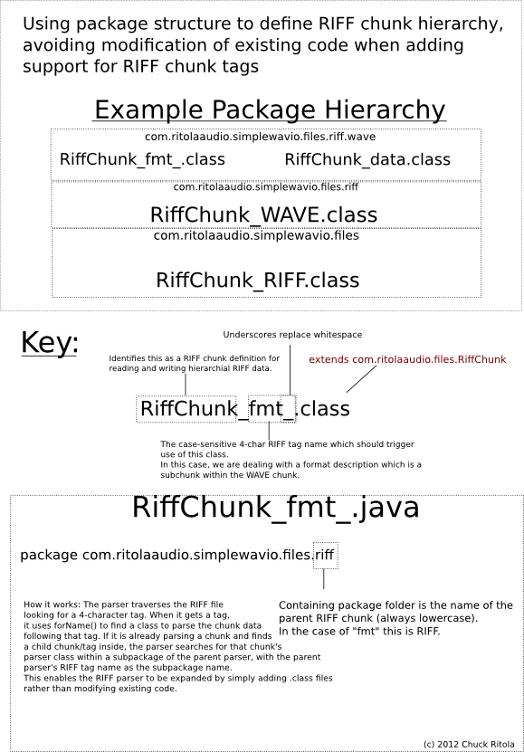

com.ritolaaudio.simplewavio.files.RiffChunk
com.ritolaaudio.simplewavio.files.RiffChunk
|
||||||||||
| PREV CLASS NEXT CLASS | FRAMES NO FRAMES | |||||||||
| SUMMARY: NESTED | FIELD | CONSTR | METHOD | DETAIL: FIELD | CONSTR | METHOD | |||||||||
java.lang.Object
public abstract class RiffChunk
General form of a RIFF chunk, the standard block of data contained within a RIFF file.
Also contains utilities for parsing and writing RIFF chunks, which may be moved at a later date for neatness.

| Field Summary | |
|---|---|
protected static byte[] |
anotherWorkChunk4
Simple utility byte array to avoid re-creating byte arrays. Warning: Not thread-safe. |
protected java.util.HashMap<java.lang.Class,RiffChunk> |
childMap
|
protected static byte[] |
workChunk2
Simple utility byte array to avoid re-creating byte arrays. Warning: Not thread-safe. |
protected static byte[] |
workChunk4
Simple utility byte array to avoid re-creating byte arrays. Warning: Not thread-safe. |
| Constructor Summary | |
|---|---|
RiffChunk()
|
|
| Method Summary | |
|---|---|
abstract int |
_sizeEstimateInBytes()
DO NOT INVOKE OUTSIDE RIFFCHUNK OBJECTS Called internally when pre-calculating the size of a RIFF file. |
abstract void |
_toData(java.nio.ByteBuffer buffer)
DO NOT INVOKE OUTSIDE RIFF CHUNK OBJECTS Called internally when recursively building a chunk hierarchy from RIFF data. |
void |
addChildChunk(RiffChunk chunkToAdd)
|
(package private) int |
childrenSizeEstimateInBytes()
|
protected void |
childrenToData(java.nio.ByteBuffer buffer)
|
int |
compareTo(RiffChunk other)
Used for ensuring proper tag order when writing RIFF files because some utilities expect a specific tag order. |
abstract void |
fromData(java.nio.ByteBuffer fileBuffer)
|
RiffChunk |
getChildChunk(java.lang.Class c)
|
int |
getOrderID()
Used for ensuring proper tag order when writing RIFF files because some utilities expect a specific tag order. |
protected void |
parseRiff(java.nio.ByteBuffer fileBuffer)
Parse the given buffer (minding its position) and build this RIFF chunk and field its child chunk hierarchy. |
static java.util.List<RiffChunk> |
ParseRiff(java.nio.ByteBuffer fileBuffer,
java.lang.Class<? extends RiffChunk> parentClass)
Parse the given buffer and output all contained RIFF chunks, which may themselves contain RIFF chunks. |
void |
printChildChunks()
Prints the class names of all child chunks of this RiffChunk non-recursively. |
static long |
readUnsignedInt(java.nio.ByteBuffer fileBuffer)
|
static int |
readUnsignedShort(java.nio.ByteBuffer fileBuffer)
|
int |
sizeEstimateInBytes()
Called externally and recursively when pre-calculating the size of a RIFF file. |
void |
toData(java.nio.ByteBuffer buffer)
Called externally when recursively building RIFF data from a hierarchy. |
| Methods inherited from class java.lang.Object |
|---|
clone, equals, finalize, getClass, hashCode, notify, notifyAll, toString, wait, wait, wait |
| Field Detail |
|---|
protected static byte[] workChunk4
protected static byte[] anotherWorkChunk4
protected static byte[] workChunk2
protected java.util.HashMap<java.lang.Class,RiffChunk> childMap
| Constructor Detail |
|---|
public RiffChunk()
| Method Detail |
|---|
public RiffChunk getChildChunk(java.lang.Class c)
public static java.util.List<RiffChunk> ParseRiff(java.nio.ByteBuffer fileBuffer,
java.lang.Class<? extends RiffChunk> parentClass)
fileBuffer - The buffer containing the raw RIFF file bytesparentClass - The class of the RIFFChunk which contains the given byte payload (at least as far as is specified by this chunks 'length' field)
protected final void parseRiff(java.nio.ByteBuffer fileBuffer)
fileBuffer - The buffer containing the raw RIFF data.public static long readUnsignedInt(java.nio.ByteBuffer fileBuffer)
public static int readUnsignedShort(java.nio.ByteBuffer fileBuffer)
public int compareTo(RiffChunk other)
compareTo in interface java.lang.Comparable<RiffChunk>public int getOrderID()
public abstract void fromData(java.nio.ByteBuffer fileBuffer)
public abstract void _toData(java.nio.ByteBuffer buffer)
buffer - public final void toData(java.nio.ByteBuffer buffer)
buffer - protected void childrenToData(java.nio.ByteBuffer buffer)
public abstract int _sizeEstimateInBytes()
public final int sizeEstimateInBytes()
int childrenSizeEstimateInBytes()
public void addChildChunk(RiffChunk chunkToAdd)
public void printChildChunks()
|
||||||||||
| PREV CLASS NEXT CLASS | FRAMES NO FRAMES | |||||||||
| SUMMARY: NESTED | FIELD | CONSTR | METHOD | DETAIL: FIELD | CONSTR | METHOD | |||||||||